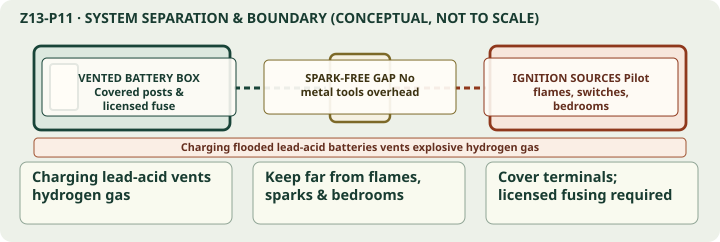

Z13-P11 · Home survival and utilities · New manuscript
Isolate vented lead-acid backup batteries from sparks and living spaces
Prevent explosive hydrogen-gas accumulation and acid burns if deep-cycle lead-acid batteries are used for backup power.
When it applies · Rural homes, basements, or cabins storing flooded or AGM 12-volt deep-cycle batteries and inverters.
Equipment · Battery box with exterior venting where required, fuse/breaker near positive terminal, eye/hand protection, and non-sparking workspace awareness.

Actions
- Recognize that charging flooded lead-acid batteries releases explosive hydrogen gas—never charge unsealed lead-acid batteries inside sealed closets, bedrooms, or near furnace pilot lights, water-heater flames, or spark-producing switches.[U09, U04]
- Keep metal tools, jewelry, and loose wires off battery terminals (a dropped wrench across posts melts steel and triggers acid explosions), and verify properly sized overcurrent fuse protection near the battery per licensed electrical guidance.[U09, U02]
- Never lift cracked or leaking battery cases without acid-resistant protection; treat conceptual battery-bank schematics strictly as hazard-awareness guides rather than DIY electrical wiring designs.[U09, U02, M07]
Failure recognition · Charging two flooded marine batteries on a basement shelf three feet from a gas water-heater pilot flame.[U09, U04]
Verify · Confirm adequate ventilation away from ignition sources, covered terminals, zero loose metal overhead, and intact dry casings.[U09, U04]
Stop or change course · If a battery case is hot, hissing, leaking or giving off an unusual odor, leave the area without operating nearby switches or disconnecting terminals. Seek emergency or qualified help from a safe location.[U09, U11]
Evidence and editorial notes
- M07 · NIH / MedlinePlus · Burns (current web edition)
- Section: Thermal Burn Cooling, Covering, and Severity Escalation · Conditions: Minor vs major thermal burns (flame, scald, contact)
Support: Cool minor superficial burns with cool (not icy) running water, remove constricting rings/clothing not stuck to skin, cover loosely with clean non-stick dressing, and seek emergency care for deep, large, facial, hand, foot, genital, joint, or airway burns.
Limitations: Never apply ice, butter, grease, or ointments to fresh burns, and do not pop intact blisters. · Conflicting evidence: None; aligns with ARC/ABA lay burn first aid.
Editorial note: Establishes burn-cooling limits and automatic clinical-escalation zones. · Specialist reviewer: Burn care and wilderness medicine
Primary source · checked 2026-11-24 - U02 · CPSC · CPSC Warns of Generator, Carbon Monoxide and Fire Hazards Ahead of Hurricane Season (2026 seasonal agency guidance)
- Section: Use portable generators outdoors; keep exhaust away · Conditions: Portable generator during household outage
Support: Run outdoors at least 20 feet from buildings and direct exhaust away. Use approved connections as the manual dictates; licensed electrical work governs transfer to a building. Never backfeed.
Limitations: Distance alone does not guarantee safety. Local code and exact equipment determine installation. · Conflicting evidence: See A02 claim audit for boundaries.
Editorial note: Core electrical isolation boundary across Z13 generator cards. · Specialist reviewer: Licensed electrician and fire safety
Primary source · checked 2026-11-24 - U04 · FEMA / Ready.gov · Home Fires (current web edition)
- Section: Home Fires > Smoke Alarms, Fire Extinguishers, and Escape Plans · Conditions: Residential fire prevention during outages and supplemental heating
Support: Test smoke alarms monthly on every level and outside sleeping areas, keep two exits clear from every room, store fuels outside living spaces in approved containers, and evacuate immediately if a fire exceeds incipient containment.
Limitations: Candles and improvised indoor flames dramatically elevate outage house-fire deaths. · Conflicting evidence: None; integrates with CPSC CO-alarm rules (C09).
Editorial note: Anchors outage fire prevention, fuel storage, and exit readiness in Z13. · Specialist reviewer: Fire prevention and residential safety
Primary source · checked 2026-11-24 - U09 · U.S. Fire Administration · Battery Fire Safety (Current web edition)
- Section: Messages to share; lithium-ion battery safety · Conditions: Consumer battery charging, storage, use and visible failure
Support: Follow manufacturer limits and use certified compatible equipment. Stop use for heat, swelling, noise, leaks or unusual smell. Evacuate and call for help during an active incident.
Limitations: Battery electrical protection, flooding, thermal faults and lead-acid installation require applicable specialist review. Do not handle failing cells. · Conflicting evidence: See A02 claim audit for boundaries.
Editorial note: Grounds portable power sizing, inverter limits, and battery fire safety. · Specialist reviewer: Electrical safety and fire prevention
Primary source · checked 2026-11-25 - U11 · U.S. DOT PHMSA · Pipeline Leak Recognition and What to Do (Current web edition)
- Section: What to DO; What Not to Do · Conditions: Suspected gas or pipeline leak
Support: Leave the affected area and call 911 and the provider from safety. Avoid spark sources and leave valve and restoration decisions to authorized responders.
Limitations: Do not transpose outdoor hazmat sheltering directions to a gas leak inside the dwelling. · Conflicting evidence: See A02 claim audit for boundaries.
Editorial note: Establishes strict utility-leak evacuation and licensed restoration gates. · Specialist reviewer: Gas utility safety and fire service
Primary source · checked 2026-11-25
Source lineage · NFPA Heating/Fire Safety and Ready.gov Power Outages; new manuscript · Classification · New manuscript.